← All workProject 12 of 12
Project 12Designed and calculated, not built
3D Printer Filament Feeder
A geared dual-drive Bowden feeder for 1.75 mm filament: a NEMA 17 stepper, a 3:1 gear stage, two meshing hobbed drive gears and a spring-loaded idler arm. A runout switch and a spool holder sit on the same 2020 rail. Designed in Inventor as a working model with true involute gears, with grip, torque, gear and spring calculations.
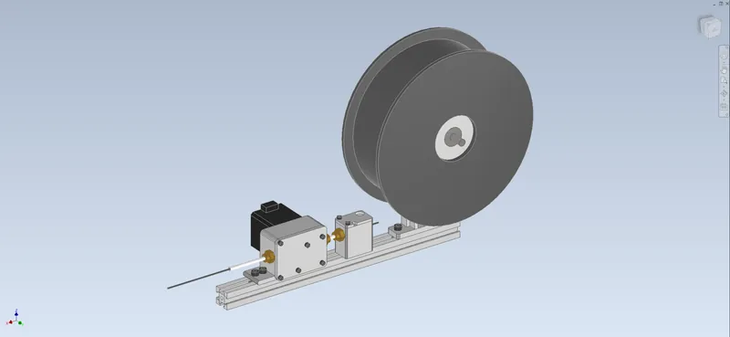
- Clamp on the filament
- 53N
- Steps per mm (1/16)
- 415
- Push before slip (calculated)
- 64N
- Clashes at 11 poses
- 0
01Overview
A Bowden filament feeder in the layout of a dual-drive geared extruder. A StepperOnline 17HS19-2004S1 NEMA 17 drives a 16-tooth steel pinion into a 48-tooth brass gear (3:1). That gear turns the main drive gear, which meshes with an identical idler drive gear, so both hobbed gears grip and push the filament (7.36 mm effective diameter, 415 steps/mm at 1/16 microstepping). The idler gear rides on a PA6-CF arm that pivots on an M3 screw. A compression spring acting through a 2:1 lever presses it onto the filament with 53 N. PC4-M10 push-fits and 2.2 mm guides take the filament right up to the gears. An Omron D2F microswitch block reports runout, and a printed spool holder with two 608 bearings carries a 1 kg spool; all three bolt to one 300 mm 2020 rail.
The Inventor model is a working model with two parameters. Feed turns every gear, the motor shaft and the spool by the right ratios and slides the filament; Lever swings the idler arm open for loading. The gear teeth are true involute profiles generated in Python, and the meshes stay clash-free at every pose. Designed and calculated only; nothing has been printed or built.
Tools Autodesk Inventor 2027 / Python / NumPy / Matplotlib / Bambu Studio
What I did
- Wrote an involute gear generator in Python and built the 16/48 and 17/17 gears from it, then swept the mesh in Inventor across a tooth pitch and a full turn with zero clashes.
- Built the assembly as a working model with two drivers. One parameter turns the motor, pinion, gear, both drive gears and the spool at their true ratios and slides the filament; the other opens the idler arm.
- Sized the clamp spring and lever from a grip model, checked coil bind and wire stress when fully open, and showed that grip, not the motor, sets the flow limit.
- Checked printed parts against their real loads, and chose PA6-CF for the arm (creep) and brass for the 48T gear (bending) from those numbers.
Specification
- Drive
- StepperOnline 17HS19-2004S1 NEMA 17 (59 N cm), 16T steel pinion -> 48T brass gear, m0.5, 3:1
- Drive gears
- Two 17T m0.5 hardened dual-drive gears with a hobbed filament groove (Bondtech BMG type), 7.36 mm effective diameter, on 3 mm shafts in 683ZZ / MR63ZZ bearings
- Idler
- PA6-CF arm on an M3 pivot, lever 2:1, spring 8 x 1.0 x 18 (4.45 N/mm) at 12 mm: 53 N clamp; opens 6 deg for loading
- Filament path
- 1.75 mm; PC4-M10 push-fits in and out, 2.2 mm guide ribs to the gears, PTFE 4 x 2 Bowden
- Runout and spool
- Omron D2F-01L microswitch block; 1 kg spool on a printed hub with 2 x 608ZZ and an 8 mm axle
- Printed parts
- Body, cover, runout block and lid, spool upright and hub in PETG; idler arm in PA6-CF; 2 Bambu plates
- Assembly
- 50 occurrences, 147 constraints, 0 DOF; driven by Feed and Lever; 2.21 kg with a full spool
- Bill of materials
- 40 lines including wiring, inserts and Bowden tube: $117, of which the motor is confirmed on a vendor listing
02Design decisions4 changes
- 01
Sized the clamp from the grip, not by feel
- Finding
- A dual-drive feeder pushes with 2 mu N, because both gears drive. Feed-force data for PLA through a 0.4 mm nozzle puts about 50 N at 20 mm3/s.
- Action
- Chose a stock-size spring (8 mm OD, 1.0 mm wire, 18 mm free, 4.45 N/mm calculated) at 12 mm installed on a 2:1 lever: 53 N of clamp. I checked coil bind when the arm is opened 6 deg for loading (1.0 mm margin) and the wire stress (SF 1.7 clamped, 1.2 fully open).
- Outcome
- 64 N push before slip at mu 0.6, which is slip at about 25 mm3/s. The motor still has a torque safety factor of 5.9 at that point, so grip, not the motor, is the limit.
- 02
Generated real involute gears to prove the meshes
- Finding
- Simplified tooth shapes either clash or leave false gaps, so a clash check of a gear train means little without real profiles.
- Action
- Wrote an involute generator (tooth phases set so the meshes are right at Feed 0). I checked both pairs against the undercut / interference limit (48T tip radius 12.50 against a 12.53 limit) and swept Feed across a tooth pitch and a full turn.
- Outcome
- 0 clashes at all 11 poses; 0.057 mm pinion backlash, measured in Inventor.
- 03
The first clash check found five real fit problems
- Finding
- The runout switch hit its push-fit, the two push-fits overlapped, the pivot screw touched the motor boss, the 24 mm motor shaft end ran into the body wall, and the main shaft end touched the cover.
- Action
- Moved the runout block 14 mm and placed its features from its outlet face. Shortened the pivot screw to M3x28, widened the drive pocket so the shaft end runs free, and deepened the front bearing seat 0.5 mm.
- Outcome
- 0 clashes; the motor shaft end clears the inlet guide by 0.26 mm and the idler opens with a 0.9 mm loading gap.
- 04
Brass, not POM, for the 48-tooth gear
- Finding
- When the filament slips, the gear train carries the full grip-limited force. The m0.5 POM gear then has a Lewis bending safety factor of only 1.29.
- Action
- Changed the 48T gear to brass (same geometry) and made the idler arm PA6-CF, because its spring load is constant and PETG would creep.
- Outcome
- Gear safety factor 5.2 at the grip limit (11 at normal printing loads); arm stress 5.6 MPa (SF 8).
03Views10 renders


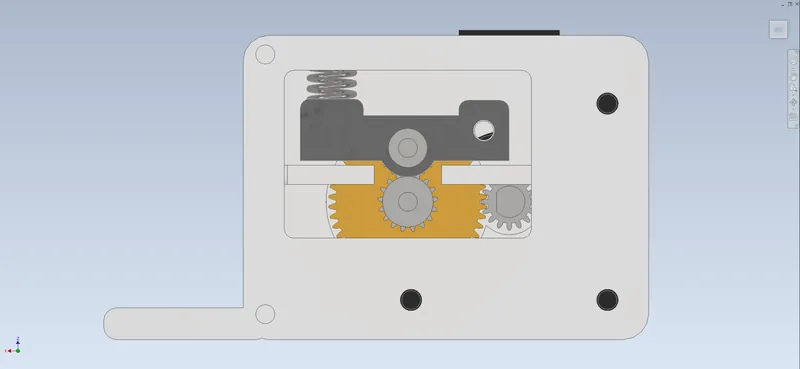

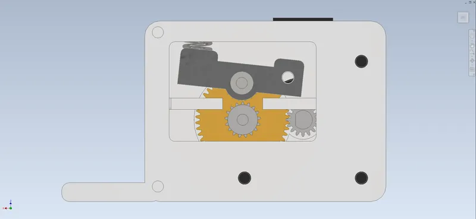

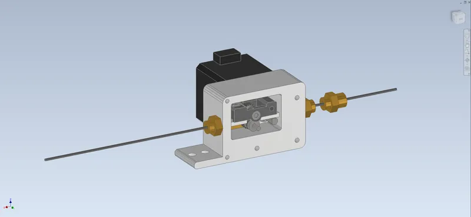

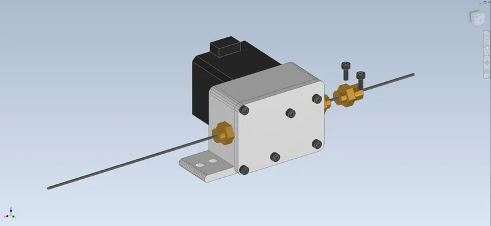

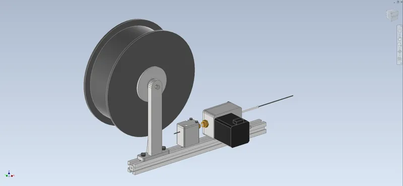

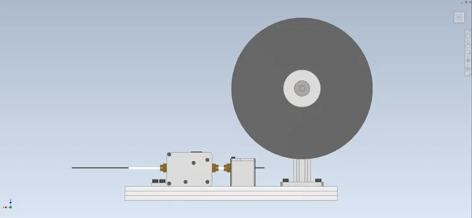

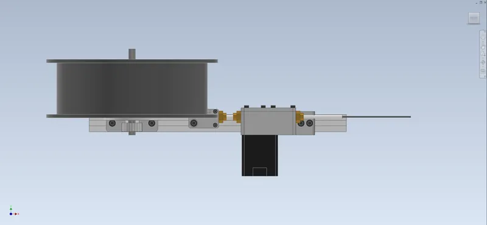

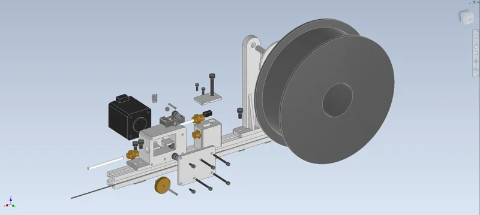

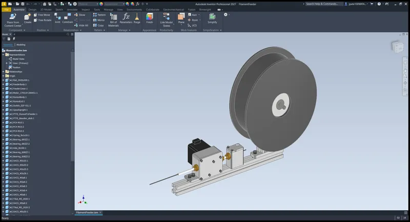
04Drawings2 sheets

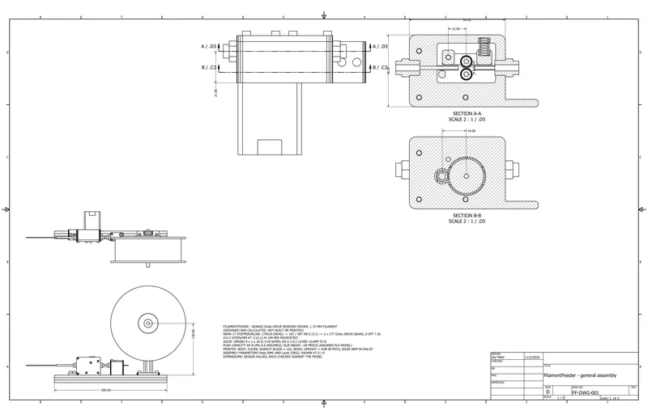

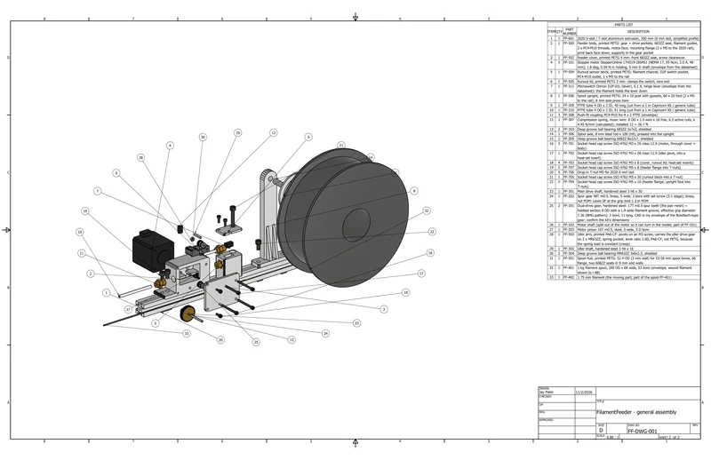
05Analysissimulated unless stated
A1 Grip, torque and mechanics

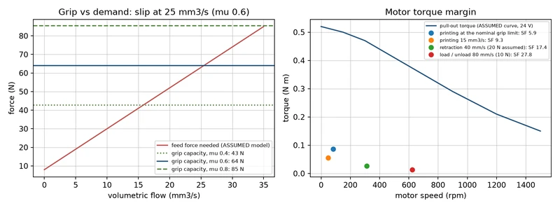

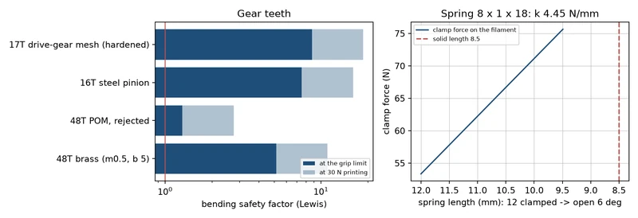
06Results7 checks
| Check | Result | Margin / status |
|---|---|---|
| Grip | 53 N clamp; 43 / 64 / 85 N push before slip at mu 0.4 / 0.6 / 0.8 (assumed); slip at about 25 mm3/s | Calculated |
| Motor | Torque safety factor 5.9 at the grip limit, 9.3 at 15 mm3/s, 17 on 40 mm/s retractions | Calculated |
| Resolution | 415.2 steps/mm at 1/16 microstepping, 2.4 um per microstep | Calculated |
| Gears | Lewis SF 5.2 (brass 48T), 7.5 (pinion), 8.8 (drive-gear mesh) at the grip-limited force | Calculated |
| Shafts and bearings | Main shaft 137 MPa (SF 7.3), 0.019 mm deflection at the groove; bearing L10 above 1,000,000 h | Calculated |
| Working model | 0 DOF, 0 clashes at 11 poses (Feed 0-60 mm, idler open 3 and 6 deg); probes within 0.0000 deg | Checked in Inventor |
| Clearances | Filament to grooves 0.067 mm (envelope), loading gap 0.90 mm, pinion backlash 0.057 mm | Measured in Inventor |
07Parts list40 lines, $116.99
From the project's bill of materials (FilamentFeeder_BOM.csv), grouped by how you get each part. Quantities are from the CAD assembly. Prices marked Confirmed were checked against a vendor listing; Est. prices are estimates. Designed and calculated, not built.
- Buy · 40 pcs
- 26lines
- Print · 7 pcs
- 7lines
- Fabricate · 0 pcs
- 0lines
- Hardware · 15 pcs
- 7lines
- Confirmed
- $12.19 10.4%
- Est.
- $104.80 89.6%
- Not priced
- 3 lines FF-401 1 kg filament spool; FF-806 Bambu PETG HF 1 kg (printed parts about 170 g); PA6-CF 0.5 kg for the idler arm (3 g); FF-807 Retaining compound (Loctite 641) for the MR63 / 683 bearing seats and the 8 mm axle press fit
Not reviewed for completeness yet. The BOM has not been checked against a buildability review.
Made in Inventor designed and modelled by me Vendor model a purchased part, maker's or catalogue model placed in the assembly Stand-in model a simple placeholder shape Not in CAD needed to run it, not modelled
P1 Buy purchased and vendor parts · 26 lines, 40 pcs
| Qty | Part no. | Description | Unit | Line |
|---|---|---|---|---|
| 1 off | FF-101 | Stepper motor StepperOnline 17HS19-2004S1 (NEMA 17, 59 Ncm, 2.0 A, 48 mm); 1.8 deg, 0.59 N m holding, 5 mm D shaft (envelope from the datasheet)Stand-in modelSource: StepperOnline · Material: Steel / copper (stepper motor)Price: (listing): eBay StepperOnline 17HS19-2004S1 $12.19, read 2026-11-02 | $12.19 | $12.19Confirmed1 × $12.19 |
| 3 off | FF-308 | Push-fit coupling PC4-M10 for 4 x 2 PTFE (envelope)Stand-in modelSource: Generic (Capricorn / Amazon) · Material: Nickel-plated brass / POM (push-fit) | $1.50 | $4.50Est.3 × $1.50 |
| 1 off | FF-311 | Microswitch Omron D2F-01L (lever), 0.1 A, hinge lever (envelope from the datasheet): the filament holds the lever downStand-in modelSource: Omron (Digi-Key) · Material: Switch: PBT body, steel lever | $2.50 | $2.50Est.1 × $2.50 |
| 1 off | FF-401 | 1 kg filament spool, 200 OD x 68 wide, 53 bore (envelope; wound filament shown to r 88)Stand-in modelSource: Bambu Lab / eSun (consumable) · Material: PLA filament on a cardboard / plastic spool (envelope)Price: not priced: consumable | $0.00 | Not priced |
| 1 off | FF-402 | 1.75 mm filament (the moving part; part of the spool FF-401)Stand-in modelSource: (part of FF-401) · Material: PLA filament on a cardboard / plastic spool (envelope) | Incl. | |
| 1 off | FF-102 | Motor shaft (split out of the motor so it can turn in the model; part of FF-101)Vendor modelSource: StepperOnline (part of FF-101) · Material: Steel | Incl. | |
| 2 off | FF-201 | Dual-drive gear, hardened steel: 17T m0.5 spur teeth (the pair mesh) + hobbed section 8 OD with a 1.9 wide filament groove, effective grip diameter 7.36 (BMG pattern); 3 bore, 11 long. CAD is my envelope of the Bondtech-type gear: confirm the kit's dimensionsVendor modelSource: Bondtech BMG drive gear kit (or equivalent dual-drive set) · Material: Hardened steel (drive gears, shafts)Price: half of a $26.99 Bondtech BMG drive-gear kit listing (West3D, read 2026-11-02; kit bore to confirm) | $13.50 | $27.00Est.2 × $13.50 |
| 1 off | FF-202 | Spur gear 48T m0.5, brass, 5 wide, 3 bore with set screw (3:1 stage); brass, not POM: Lewis SF at the grip limit 1.3 in POMVendor modelSource: Catalogue brass spur gear m0.5 48T (MISUMI / KHK class) · Material: Brass CuZn39Pb3 (machined gear) | $14.00 | $14.00Est.1 × $14.00 |
| 1 off | FF-203 | Motor pinion 16T m0.5, steel, 5 wide, 5 D boreVendor modelSource: Catalogue steel pinion m0.5 16T 5 mm bore · Material: Steel | $4.00 | $4.00Est.1 × $4.00 |
| 1 off | FF-301 | Main drive shaft, hardened steel 3 h6 x 30Vendor modelSource: McMaster-Carr / MISUMI · Material: Hardened steel (drive gears, shafts) | $3.00 | $3.00Est.1 × $3.00 |
| 1 off | FF-302 | Idler shaft, hardened steel 3 h6 x 16Vendor modelSource: McMaster-Carr / MISUMI · Material: Hardened steel (drive gears, shafts) | $3.00 | $3.00Est.1 × $3.00 |
| 2 off | FF-303 | Deep groove ball bearing 683ZZ 3x7x3, shieldedVendor modelSource: Generic (Amazon / VXB) · Material: Bearing steel (52100) | $1.50 | $3.00Est.2 × $1.50 |
| 2 off | FF-304 | Deep groove ball bearing MR63ZZ 3x6x2.5, shieldedVendor modelSource: Generic (Amazon / VXB) · Material: Bearing steel (52100) | $1.50 | $3.00Est.2 × $1.50 |
| 2 off | FF-305 | Deep groove ball bearing 608ZZ 8x22x7, shieldedVendor modelSource: Generic (Amazon / VXB) · Material: Bearing steel (52100) | $1.00 | $2.00Est.2 × $1.00 |
| 1 off | FF-306 | Spool axle, 8 mm steel rod x 100 (h9), pressed into the uprightVendor modelSource: McMaster-Carr · Material: Steel | $4.00 | $4.00Est.1 × $4.00 |
| 1 off | FF-307 | Compression spring, music wire: 8 OD x 1.0 wire x 18 free, 6.5 active coils, k 4.45 N/mm (calculated); installed 12 = 26.7 NVendor modelSource: Lee Spring / McMaster-Carr stock spring (closest stock size) · Material: Music wire ASTM A228 | $2.00 | $2.00Est.1 × $2.00 |
| 1 off | FF-309 | PTFE tube 4 OD x 2 ID, 40 long (cut from a 1 m Capricorn XS / generic tube)Vendor modelSource: Capricorn / generic | $1.00 | $1.00Est.1 × $1.00 |
| 1 off | FF-310 | PTFE tube 4 OD x 2 ID, 61 long (cut from a 1 m Capricorn XS / generic tube)Vendor modelSource: Capricorn / generic | $1.00 | $1.00Est.1 × $1.00 |
| 1 off | FF-601 | 2020 V-slot / T-slot aluminium extrusion, 300 mm (6 mm slot, simplified profile)Vendor modelSource: MISUMI HFS5-2020 / generic · Material: Aluminium 6063-T5 extrusion | $6.00 | $6.00Est.1 × $6.00 |
| 5 off | FF-706 | Drop-in T-nut M5 for 2020 6 mm slotVendor modelSource: Generic · Material: Steel | $0.25 | $1.25Est.5 × $0.25 |
| 5 off | FF-801 | Heat-set insert M3 x 5.7 brass (pivot screw, 2 cover screws in the body, 2 lid screws in the runout block)Not in CADSource: Ruthex / CNC Kitchen · Material: BrassPrice: Ruthex M3 inserts about $15 / 50 | $0.30 | $1.50Est.5 × $0.30 |
| 1 off | FF-803 | PTFE tube 4 x 2, 1 m (Bowden to the hot end; the CAD shows a 61 mm stub)Not in CADSource: Capricorn / generic · Material: PTFEPrice: generic 4 x 2 PTFE 1 m | $6.00 | $6.00Est.1 × $6.00 |
| 1 off | FF-804 | Motor cable: 4-pin JST-PH to 6-pin motor connector, 1 m (motor is sold with a 1 m lead; adapter to the printer board)Not in CADSource: StepperOnline · Material: - | $4.00 | $4.00Est.1 × $4.00 |
| 1 off | FF-805 | Runout switch lead: 2-wire 0.25 mm2 with a JST-XH 3-pin plug to the printer board's filament-sensor inputNot in CADSource: Generic · Material: - | $2.00 | $2.00Est.1 × $2.00 |
| 1 off | FF-806 | Bambu PETG HF 1 kg (printed parts about 170 g); PA6-CF 0.5 kg for the idler arm (3 g)Not in CADSource: Bambu Lab · Material: PETG / PA6-CFPrice: not priced: consumable (Jay's stock) | $0.00 | Not priced |
| 1 off | FF-807 | Retaining compound (Loctite 641) for the MR63 / 683 bearing seats and the 8 mm axle press fitNot in CADSource: Loctite · Material: -Price: not priced: shop consumable | $0.00 | Not priced |
| Buy subtotal | $106.94 | |||
P2 Print 3D-printed parts · 7 lines, 7 pcs
| Qty | Part no. | Description | Unit | Line |
|---|---|---|---|---|
| 1 off | FF-500 | Feeder body, printed PETG: gear + drive pockets, 683ZZ seat, filament guides, 2 x PC4-M10 threads, motor face, mounting flange (2 x M5 to the 2020 rail); print back face down, supports in the gear pocketMade in InventorSource: Printed in-house (Bambu Lab) · Material: PETG, printed (Bambu PETG HF): 4 walls, 30 % gyroid; effective densityPrice: filament | $2.50 | $2.50Est.1 × $2.50 |
| 1 off | FF-501 | Spool hub, printed PETG: 52.4 OD (3 mm wall) for 53-58 mm spool bores, 66 flange, two 608ZZ seats in 9 mm end wallsMade in InventorSource: Printed in-house (Bambu Lab) · Material: PETG, printed (Bambu PETG HF): 4 walls, 30 % gyroid; effective densityPrice: filament | $0.80 | $0.80Est.1 × $0.80 |
| 1 off | FF-502 | Feeder cover, printed PETG 4 mm: front 683ZZ seat, screw clearancesMade in InventorSource: Printed in-house (Bambu Lab) · Material: PETG, printed (Bambu PETG HF): 4 walls, 30 % gyroid; effective densityPrice: filament | $0.80 | $0.80Est.1 × $0.80 |
| 1 off | FF-503 | Idler arm, printed PA6-CF: pivots on an M3 screw, carries the idler drive gear on 2 x MR63ZZ, spring pocket; lever ratio 2.00; PA6-CF, not PETG, because the spring load is constant (creep)Made in InventorSource: Printed in-house (Bambu Lab) · Material: PA6-CF, printed (Bambu PA6-CF): 4 walls, 40 % gyroid; effective densityPrice: filament | $0.60 | $0.60Est.1 × $0.60 |
| 1 off | FF-504 | Runout sensor block, printed PETG: filament channel, D2F switch pocket, PC4-M10 outlet, 1 x M5 to the railMade in InventorSource: Printed in-house (Bambu Lab) · Material: PETG, printed (Bambu PETG HF): 4 walls, 30 % gyroid; effective densityPrice: filament | $0.50 | $0.50Est.1 × $0.50 |
| 1 off | FF-505 | Runout lid, printed PETG 3 mm: clamps the switch, wire exitMade in InventorSource: Printed in-house (Bambu Lab) · Material: PETG, printed (Bambu PETG HF): 4 walls, 30 % gyroid; effective densityPrice: filament | $0.20 | $0.20Est.1 × $0.20 |
| 1 off | FF-506 | Spool upright, printed PETG: 24 x 10 post with gussets, 60 x 20 foot (2 x M5 to the rail), 8 mm axle press boreMade in InventorSource: Printed in-house (Bambu Lab) · Material: PETG, printed (Bambu PETG HF): 4 walls, 30 % gyroid; effective densityPrice: filament | $1.50 | $1.50Est.1 × $1.50 |
| Print subtotal | $6.90 | |||
P3 Hardware fasteners, pins, keys, rings · 7 lines, 15 pcs
| Qty | Part no. | Description | Unit | Line |
|---|---|---|---|---|
| 3 off | FF-701 | Socket head cap screw ISO 4762 M3 x 35 class 12.9 (motor, through cover + body)Vendor modelSource: McMaster-Carr / Bolt Depot · Material: Steel, class 12.9 black oxide | $0.30 | $0.90Est.3 × $0.30 |
| 1 off | FF-702 | Socket head cap screw ISO 4762 M3 x 28 class 12.9 (idler pivot, into a heat-set insert)Vendor modelSource: McMaster-Carr / Bolt Depot · Material: Steel, class 12.9 black oxide | $0.30 | $0.30Est.1 × $0.30 |
| 4 off | FF-703 | Socket head cap screw ISO 4762 M3 x 8 (cover, runout lid; heat-set inserts)Vendor modelSource: McMaster-Carr / Bolt Depot · Material: Steel, class 12.9 black oxide | $0.15 | $0.60Est.4 × $0.15 |
| 2 off | FF-704 | Socket head cap screw ISO 4762 M5 x 10 (feeder flange, upright foot into T-nuts)Vendor modelSource: McMaster-Carr / Bolt Depot · Material: Steel, class 12.9 black oxide | $0.20 | $0.40Est.2 × $0.20 |
| 1 off | FF-705 | Socket head cap screw ISO 4762 M5 x 30 (runout block into a T-nut)Vendor modelSource: McMaster-Carr / Bolt Depot · Material: Steel, class 12.9 black oxide | $0.25 | $0.25Est.1 × $0.25 |
| 2 off | FF-707 | Socket head cap screw ISO 4762 M5 x 8 (feeder flange into T-nuts)Vendor modelSource: McMaster-Carr / Bolt Depot · Material: Steel, class 12.9 black oxide | $0.20 | $0.40Est.2 × $0.20 |
| 2 off | FF-802 | Set screw M3 x 3 cup point (48T gear and main drive gear on the 3 mm main shaft, on a ground flat)Not in CADSource: McMaster-Carr · Material: Steel | $0.15 | $0.30Est.2 × $0.15 |
| Hardware subtotal | $3.15 | |||
P4 What else you need to make it work
No buildability check has been run for this project yet.
- Download BOM (CSV)CSV · 11 kB
08Files8 downloads
- Calculation reportPDF · 242 kB
- Assembly drawingPDF · 337 kB
- Bill of materialsCSV · 11 kB
- Test summaryMD · 4 kB
- Working-model checkMD · 6 kB
- Assembly STEPSTP · 3.7 MB
- Print plate 1, PETG parts3MF · 217 kB
- Print plate 2, PA6-CF idler arm3MF · 23 kB
09Limits and assumptionsread before quoting a number
Designed and calculated only: the feeder has not been printed, built or tested, and every number is a CAD measurement, a calculation or a catalogue value. Two inputs are assumptions that a test rig should measure: the grip coefficient of the teeth on PLA (0.4 to 0.8) and the feed-force demand model. The motor pull-out curve is a typical curve for this motor class, not the vendor's published one. The drive gears are my envelope of a Bondtech BMG-type gear, so check the kit's bore and length before printing the body. The spring is the closest stock size and its rate is calculated. The teeth that bite the filament are not modelled; the CAD shows the groove envelope 0.067 mm clear of the filament. The spring is a rigid solid, so it is left out of the clash check while the arm is open. Only the motor price is confirmed on a vendor listing; the rest are estimates.